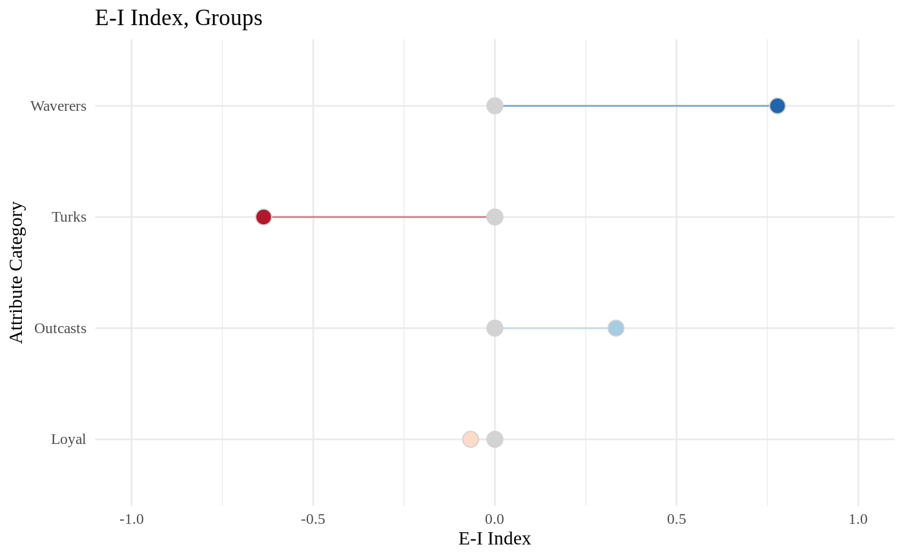

Given a categorical vertex attribute describing mutually exclusive groups, the E-I index represents a ratio of external to internal ties.
ei_index(x, vrt_attr, scope = c("global", "group", "vertex", "full"), drop_loops = FALSE) # S3 method for ei_index_vrt autoplot(x) # S3 method for ei_index_grp autoplot(x)
| x | An |
|---|---|
| vrt_attr |
|
| scope |
|
| drop_loops |
|
One of:
scalar double
ei_index_grp (data.frame)
ei_index_vrt (data.frame)
ei_index_full (named list) containing a scalar double, an ei_index_grp,
and an ei_index_vrt.
See Details.
$$E\mbox{-}I~Index = \frac{EL-IL}{EL+IL}$$
Variables and Interpretation:
\(EL\) is the count of external ties and \(IL\) is the count of internal ties.
Results closer to -1 suggest tendencies toward homophily while results closer
to +1 suggest tendencies toward heterophily.
ei_index_global() is an alias for ei_index() with argument scope = "full".
The global E-I Index calculates the ratio of external ties to internal ties for all groups.
Returns scalar double
ei_index_grp() is an alias for ei_index() with argument scope = "group".
The group E-I Index calculates the ratio of external to internal ties for each group.
Returns ei_index_grp object, a data.frame with columns:
attribute. Group category, as present in the vrt_attr provided.
external_ties. Count of ties external to the group.
internal_ties. Count of ties internal to the group.
ei_index. Value calculated by equation above.
ei_index_vrt() is an alias for ei_index() with argument scope = "vertex".
The vertex E-I Index calculates the ratio of external to internal ties for each vertex.
Returns ei_index_vrt object, a data.frame with columns:
name. Vertex names, as found in x's name or vertex.names vertex attribute.
attribute. Group to which vertices belong, as present in the vrt_attr provided.
external_ties. Count of ties external to the group.
internal_ties. Count of ties internal to the group.
ei_index. Value calculated by equation above.
ei_index() with argument scope = "full" calculates global, group, and vertex E-I
Indices.
Returns ei_index_full object, a list with elements (in formats described above):
global
by_group
by_vertex
Krackhardt, David, and Robert N. Stern. "Informal Networks and Organizational Crises: An Experimental Simulation." Social Psychology Quarterly 51, no. 2 (1988): 123-40. http://www.jstor.org/stable/2786835.
library(snatools) data("samplk", package = "ergm") ei_index(samplk1, vrt_attr = "group", scope = "full")#> Error in vrt_get_attr_names(x): could not find function "vrt_get_attr_names"#> Error in vrt_get_attr_names(x): could not find function "vrt_get_attr_names"(ei_by_group <- ei_index_grp(samplk1, vrt_attr = "group"))#> attribute external_ties internal_ties ei_index #> 1 Loyal 7 8 -0.06666667 #> 2 Outcasts 6 3 0.33333333 #> 3 Turks 4 18 -0.63636364 #> 4 Waverers 8 1 0.77777778autoplot(ei_by_group)(ei_by_vertex <- ei_index_vrt(samplk1, vrt_attr = "group"))#> Error in vrt_get_names(x): could not find function "vrt_get_names"autoplot(ei_by_vertex)#> Error in autoplot(ei_by_vertex): object 'ei_by_vertex' not found